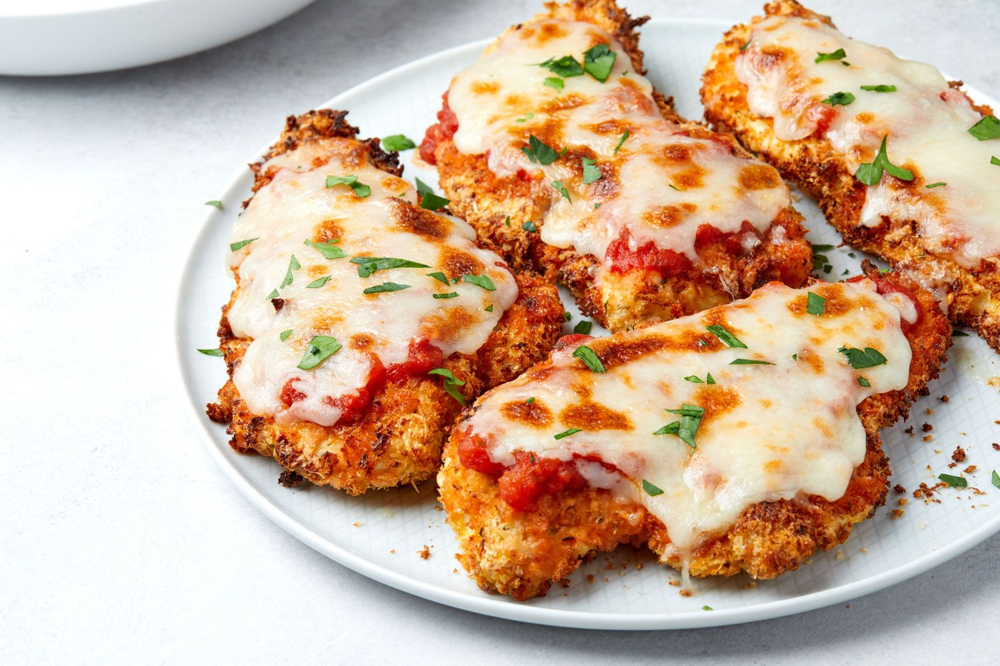

Chicken Parmesan

Description
A crispy oven roasted chicken parmesan is one of the most popular
chicken dishes in the world. It's my personal favorite thing to order
any time I find myself at Olive Garden! But what do you do when you can't
get to a restaurant? Are you stuck with chicken that is too dry or too soggy?
This homemade tomato sauce and wonderful mozzerella coating will save the day!
Ingredients
- 1 cup Panko (a Japanese breadcrumb)
- 1/2 cup breadcrumbs (Italian seasoned)
- 1/2 cup grated parmesan cheese
- 1 tablespoon minced garlic
- Marinera (Homemade or store bought is fine)
- 3 large chicken breasts halved horizontally
- 2 large eggs
- 2 tablespoons fresh chopped parsley
- Salt and pepper to season
- 1 teaspoon garlic or onion powder
- 1/2 cup olive oil for frying
Steps
- Preheat oven 430°F | 220°C. Lightly grease an oven tray (or baking dish) with non stick cooking oil spray; set aside.
- Whisk together eggs, garlic, parsley, salt and pepper in a shallow dish. Add chicken into the egg, rotating to evenly coat each fillet in the mixture. Cover with plastic wrap and allow to marinate for at least 15 minutes (or overnight if time allows for a deeper flavour).
- When chicken is ready for cooking, mix bread crumbs, Parmesan cheese and garlic powder together in a separate shallow bowl. Dip chicken into the breadcrumb mixture to evenly coat.
- Heat oil in a large skillet over medium-high heat until hot and shimmering. Fry chicken until golden and crispy, (about 4-5 minutes each side).
- Place chicken on prepared baking tray / dish and top each breast with about 1/3 cup of marinara sauce. Top each chicken breast with 2-3 slices of mozzarella cheese and about 2 tablespoons parmesan cheese. Sprinkle with basil or parsley.
- Bake for 15-20 minutes, or until cheese is bubbling and melted, and the chicken is completely cooked through.